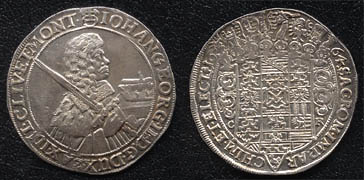

(The Germany History Network)

Johann Georg II (John George II), 1664 Taler. Private Collection
|
JOHN GEORGE II. (1613-1680), elector of Saxony, was born on 31 May 1613. In 1657, just after his
accession, he made an arrangement with his three brothers with the object of preventing disputes over
their separate territories, and in 1664 he entered into friendly relations with Louis XIV. He received money
from the French king, but the existence of a strong anti-French party in Saxony induced him occasionally
to respond to the overtures of the emperor Leopold I. The elector’s primary interests were not in politics,
but in music and art. He adorned Dresden, which under him became the musical centre of Germany; welcoming
foreign musicians and others he gathered around him a large and splendid court, and his capital was the constant
scene of musical and other festivals. His enormous expenditure compelled him in 1661 to grant greater control
over monetary matters to the estates, a step which laid the foundation of the later system of finance in Saxony.
John George died at Freiberg on 22 August 1680.
|
|